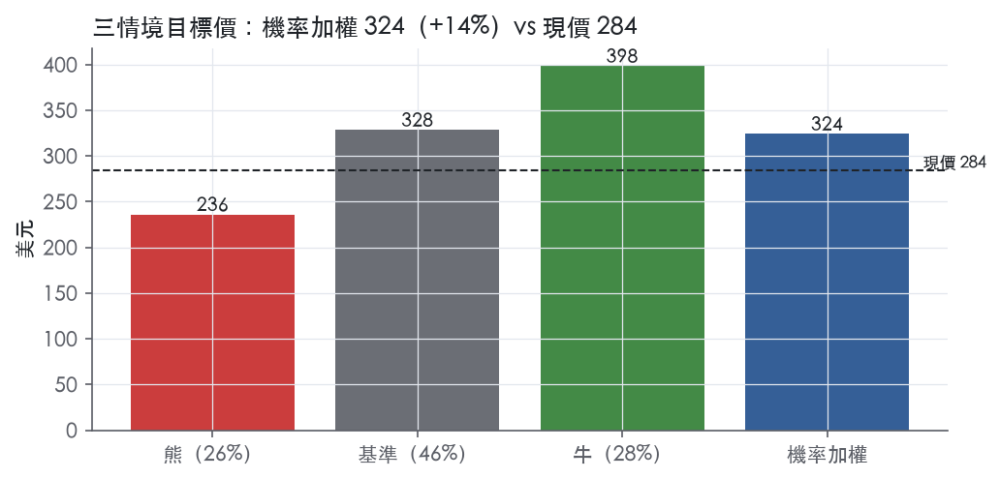
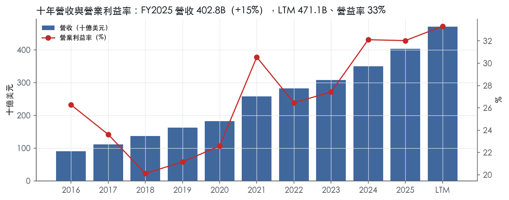
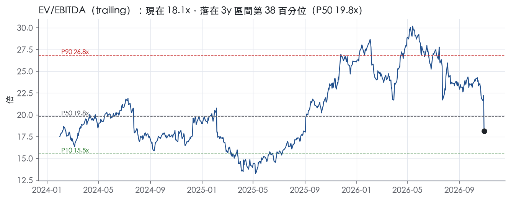
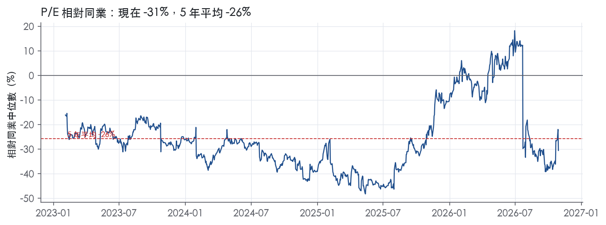
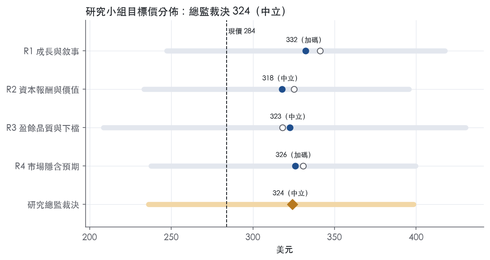
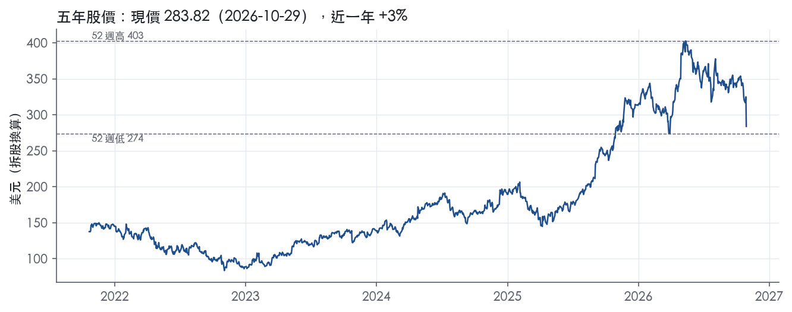

評等總表 › 通訊服務 › GOOGL
成長兌現、倍數已殺到持平，看多｜評等 中立｜目標價 324
| 報告日 | 評等 | 目標價 | 當時股價 | 超額報酬 |
|---|---|---|---|---|
| 2026-10-29 | 中立 | 324 | 284 | +4.4% |
| 2026-09-28 | 中立 | 383 | 343 | +1.9% |
| 快評 | 動作 | 結論 |
|---|---|---|
| 2026-10-28 | 維持 | 營收高於我們預測，淨利因投資損失偏低 |
| 評等 | 中立（邊界，鄰近加碼） |
| 12 個月目標價 | 324 美元 |
| 現價 | 283.82 美元（2026-10-29） |
| 預期報酬 | 股價 +14.2%＋股息 0.3%＝總報酬 +14.5%；同業籃門檻 10.1%，超額 +4.4% |
| 估值方法 | EV/EBITDA 18.0x，套在未來四季的EBITDA |
| 三情境 | 熊 236／基準 328／牛 398 |
| 研究流程 | 四位研究員兩輪辯論＋研究總監裁決 |
| 資料來源 | SEC EDGAR XBRL、Tiingo、FRED（全免費） |
成長兌現、倍數已殺到持平，看多（研究總監裁決，四位研究員兩輪辯論後）
評等 中立（邊界，鄰近加碼）｜12 個月目標價 324 美元（總監三情境機率加權 324 與研究員中位數 324 各半）｜現價 283.82（2026-10-29）
預期報酬：股價 +14.2%＋股息 0.3%＝總報酬 +14.5%。同業籃門檻 10.1%，超額 +4.4%，離加碼的分界不到三個百分點，屬邊界評等（落在其他級距的機率約五成）。
估值方法：EV/EBITDA 18.0x，套在未來四季的EBITDA。三情境：熊 236（26%）／基準 328（46%）／牛 398（28%）。
立場看多而評等中立：評等看的是「預期總報酬 14.5% − 同業籃門檻 10.1%」＝超額 4.4%，不是絕對漲跌；看多但超額不足，代表上檔已被同業的預期報酬抵銷。
什麼會讓研究總監改變看法：FY2026Q4 Cloud 季營收低於 30.7B 且 2027 資本支出指引使資本強度高於 40%，轉中性並以熊情境驅動為基準；2027 指引見頂且單季 FCF 轉正，倍數上調至 19.8x。
| 過去四季（實際，FY2026Q3） | 未來四季 | 第 5–8 季 | 第 9–12 季 | |
|---|---|---|---|---|
| 營收（B） | 471.1B | 565.3B | 644.5B | 702.5B |
| 營收成長 | 22.2% | 20.0% | 14.0% | 9.0% |
| 營業利益率 | 33.3% | 31.5% | 31.0% | 31.0% |
| EPS（美元） | 19.16 | 11.71 | 12.90 | 13.80 |
| EPS 成長 | 89.3% | -38.9% | 10.2% | 7.0% |
| 每股股息（美元） | 0.86 | 0.86 | 0.86 | 0.86 |
| P/E（現價） | 14.8x | 24.2x | 22.0x | 20.6x |
| 股息殖利率（現價） | 0.3% | 0.3% | 0.3% | 0.3% |
過去四季為申報數字；預測為研究總監的假設、程式計算。倍數與殖利率都用現價計算，用來看現價對應各期獲利的高低。
| 項目 | 上次（2026-09-29） | 這次（2026-10-30） | 變動 |
|---|---|---|---|
| 評等 | 中立 | 中立 | ＝ |
| 機率加權目標價（美元） | 383 | 324 | -15.4% |
| 超額報酬 | 1.9% | 4.4% | +2.5 pp |
| 目標倍數 | 21.5x | 18x | — |
| 未來四季營收成長 | 19.0% | 20.0% | +1.0 pp |
| 未來四季營益率 | 33.0% | 31.5% | -1.5 pp |
| 未來四季 EPS（美元） | 11.58 | 11.71 | +1.1% |
| 熊／基準／牛機率 | 19／56／25 | 26／46／28 | — |
程式計算；「未來四季」各自從當次報告的資料起點算。研究總監逐點說明見第八章「與上次報告比較」。
| 情境 | 機率（歷史） | 故事 | 未來四季營收成長 | 第 5–8 季營益率 | 倍數 | 目標價 | 股價漲跌 |
|---|---|---|---|---|---|---|---|
| 熊 | 26%（25%） | 對應風險表第 1 條、第 4 條與「公司沒寫」的 TPU 客戶集中：TPU 銷售斷續使 Cloud 失速、AI 變現改變壓 Services，固定承諾使資本支出占比上升，低價動用 ATM 剩餘 27.6B 加深稀釋；觸發為 FY2026Q4 財報 Cloud 季營收低於 30.7B | 14.0% | 28.0% | 14.5x | 236 | -16.8% |
| 基準 | 46%（46%） | 營收由 Cloud 帶動高於基準，折舊與 AI 研發壓營益率，資本支出靠外部融資，倍數持平 | 20.0% | 31.0% | 18.0x | 328 | 15.7% |
| 牛 | 28%（29%） | Cloud 維持倍速、Search 守住雙位數，固定承諾攤在更大營收上使資本支出強度下降、FCF 轉正，倍數回到 3 年 P50 上方一點（僅個股因素，不放利率擴張） | 26.0% | 33.5% | 20.0x | 398 | 40.4% |
目標價由程式依研究總監的驅動與倍數計算；機率由研究總監給定。括號內是歷史頻率：把這檔股票過去十年 12 個月報酬的波動形狀，置中在基準情境，結果落在各情境附近的比例。

四位研究員用不同方法各自估值，回應研究總監的質疑後交出第二輪，最後由總監逐點裁決。各研究員的主張見第七章，裁決理由見第八章，完整論證見《研究底稿》。
| 立場（一輪→二輪） | 加權目標價（一輪→二輪） | 評等（一輪→二輪） | 第二輪倍數 | 熊～牛目標價 | |
|---|---|---|---|---|---|
| R1 成長與敘事 | 看多→看多 | 341→332 | 加碼→加碼 | 18.0x | 247～418 |
| R2 資本報酬與價值 | 中性→中性 | 325→318 | 中立→中立 | 17.5x | 233～396 |
| R3 盈餘品質與下檔 | 中性→中性 | 318→323 | 中立→中立 | 17.5x | 209～430 |
| R4 市場隱含預期 | 看多→看多 | 331→326 | 加碼→加碼 | 18.0x | 238～400 |
| 研究總監裁決 | 看多 | 324 | 中立 | 18.0x | 236～398 |
目標價由程式依各自的驅動與倍數計算；評等＝機率加權總報酬 − 同業籃門檻。
Alphabet 是一家以廣告為現金引擎、雲端與 AI 基礎設施為成長引擎的科技集團，核心資產是 Google Search、YouTube、Android 生態與 Google Cloud。公司透過提供相關且具成本效益的線上廣告、面向企業的雲端基礎設施／平台／應用服務，以及訂閱、App 內購與裝置銷售來創造營收¹。客戶端分兩類：廣告主透過 Google Ads、Google Ad Manager、Display & Video 360 等工具購買廣告庫存；企業客戶則以消耗量或訂閱方式使用 Google Cloud Platform 與 Google Workspace¹。FY2025 全年營收 402.84B，較 FY2024 的 350.02B 成長 15.1%。
公司依內部管理方式分為 Google Services、Google Cloud、Other Bets 三個報告分部，外加 Alphabet-level activities（主要反映共用 AI 研發費用）¹。Google Services 涵蓋 Google Search & other、YouTube ads、Google Network 組成的廣告業務，以及消費訂閱（YouTube TV、YouTube Music and Premium、NFL Sunday Ticket、Google One）、Google Play 平台費與 Pixel 裝置銷售¹。Google Cloud 包含 Google Cloud Platform（企業 AI 基礎設施、Vertex AI、Gemini Enterprise、網路安全、資料分析）與 Google Workspace（含 Gemini for Google Workspace）¹。FY2025 分部營業利益：Google Services 139,404M、Google Cloud 13,910M、Other Bets 虧損 7,515M、Alphabet-level activities 虧損 16,760M，合計營業利益 129,039M¹。Google Services 仍是絕對主力，Google Cloud 利潤率明顯落後但擴張速度最快，Other Bets 持續燒錢且虧損隨 Waymo 相關估值性薪酬費用增加而擴大。Google Services 營業利益年增（139,404M－121,263M）即增加 18.1B 美元，主要由營收成長驅動，部分被法務及其他事項費用、TAC 與內容取得成本增加所抵銷¹；Google Cloud 營業利益年增（13,910M－6,112M）即增加 7.8B 美元，主要由營收成長驅動，部分被技術基礎設施使用成本與員工薪酬費用增加所抵銷¹；Other Bets 營業虧損年增（7,515M－4,444M）即擴大 3.1B 美元，主要因與 Waymo 相關的估值性薪酬費用增加所致¹。FY2025 資本支出高達 91,447M（10-K 財報揭露），主要投入技術基礎設施（伺服器、網路設備、資料中心），公司明確表示 2026 年將相對 2025 年顯著增加此類投資¹。
10-K Item 1 未揭露按地理區域的詳細營收分布。廣告業務的通路是搜尋分銷夥伴（瀏覽器、工具列預設搜尋）與 Google 自有屬性（Gmail、Google Maps、Google Play）、YouTube 屬性、以及參與 AdMob、AdSense、Google Ad Manager 的 Google Network 屬性¹。公司對大多數 Network 廣告以總額法入帳，即向客戶收取的金額列為營收，支付給 Network 夥伴的金額列為營業成本¹。雲端客戶為各類規模的企業，服務方式為消耗量計價或訂閱，合約期間可能超過一年¹。FY2026Q3 單季揭露營收結構：Google Search & other 63,350M、YouTube ads 11,207M、Google Network 7,455M、Google 廣告合計 82,012M；Google 訂閱/平台/裝置 14,290M；Google Services 總計 96,302M；Google Cloud 30,709M；Other Bets 372M²。客戶信用風險上，公司表示應收帳款通常無擔保，來自全球各地客戶的營收¹。
過去四個單季營收加速成長，且 Google Cloud 貢獻度顯著放大，是最大的敘事轉折。FY2025Q4 營收 113.83B，年增 18.0%。FY2026Q1 營收 109.90B，年增 21.8%，淨利躍升至 62.58B。FY2026Q2：合併營收成長 24%，固定匯率成長 23%，達 119,796M，為連續第 12 個雙位數成長季度；Google Services 營收成長 15% 至 94,540M，Google Cloud 營收成長 82% 至 24,768M，營業利益率較去年同期擴張 2 個百分點至 34%；其他收益因權益證券未實現利益淨額達 97,983M，帶動淨利增加 298%、EPS 增至 9.11³。FY2026Q3：合併營收成長 25% 至 127,577M，為連續第 13 個雙位數成長季度；Google Services 營收成長 11% 至 96,302M，由 Google Search & other 成長 12% 帶動，搜尋查詢年增率為近五年最高；Google Cloud 營收成長 103% 至 30,709M，由企業 AI 基礎設施、AI 解決方案與核心 GCP 服務帶動，TPU 系統銷售也是重要貢獻；營業利益年增 30%，營業利益率 31.8%；淨利 26,170M，EPS 2.12²。公司未在兩份新聞稿中給出具體次季營收指引數字。
公司將 AI 投資定位為橫跨全業務線的核心驅動力：「Our AI investments are redefining what's possible across every part of our business.」³。CEO 表示 AI 投資正帶動整體搜尋查詢成長，包含商業查詢，且年增率是近五年最高²。公司強調 Gemini 模型處理量快速擴張，首方模型 API 每分鐘處理近 32 billion tokens，是一年前的四倍以上，Gemini App 用戶已達 10 億，是 Google 史上成長最快的產品²。雲端方面，公司將成長歸因於企業 AI 基礎設施、AI 解決方案需求與 TPU 系統銷售的強勁需求，並提到 Gemini Enterprise 已獲近九成《財富》100 大企業採用³²。資本配置上，公司明言 2026 年將相對 2025 年顯著增加技術基礎設施（伺服器、網路設備、資料中心）投資，顯示資本支出強度將進一步上升¹；同時透過 2025 年 Wiz（32.0B 美元）與 Intersect（4.8B 美元）兩筆併購強化雲端安全與資料中心能源基礎設施版圖¹。整體看，Alphabet 正從廣告現金牛轉型為「AI 基礎設施＋應用」雙軌公司，Google Cloud 的利潤率雖仍遠低於 Services，但其成長率與規模擴張速度已成為股價敘事的主要變數。資本支出與資產負債表槓桿同步快速上升（FY2026Q3 總債務已達 126.12B），意味著未來自由現金流將持續承壓，須關注 AI 資本回報能否兌現。FY2026Q2 單季因未實現股權證券利益帶來的淨利爆發屬一次性非經常性項目，不宜線性外推至後續季度。

Alphabet 評為寬護城河，我們有把握未來 10 年以上 ROIC 仍高於資本成本。護城河主體是 Google Services 的搜尋與廣告體系，FY2025 該分部營業利益 139,404M，同期合併營業利益 129,039M¹。趨勢判為穩定而非變寬，原因有兩個：廣告端的定價能力在數字上沒有出現破口，但資本密集度急升正在壓低報酬率，抵銷了 Cloud 帶來的加分。
優勢來源有四類：無形資產、網路效應、成本優勢、轉換成本，前兩類構成評級支柱。
本章取得的 Item 1 節錄不含競爭段落，以上判斷是從營收認列、成本結構與分部揭露推得。
看得到，量化底稿整體支持寬評級，但最新一年資本報酬的方向不利。
支持寬評級的數字：
與主張衝突的數字有三點：
維持寬評級的理由：
最大的侵蝕來源是 AI 資本支出回報不兌現，其次是法規拆解預設入口。
目標倍數相對同業應給予溢價，因為 ROIC 長期高於資本成本 29.6 個百分點，支撐超額報酬期超過 10 年。溢價幅度應以資本支出壓縮 FCF 為上限，並以 EV/EBITA 而非 P/E 作為定錨。原因是 FY2025 其他收益淨額 29,787M 主要來自非上市權益證券的未實現利益，會墊高 EPS 而高估獲利品質¹。
| 指標 | 最新 | 十年平均 | 標準差 | 最低 | 最高 |
|---|---|---|---|---|---|
| ROIC | 37.0% | 39.6% | 9.7% | 18.4% | 58.0% |
| 毛利率 | 59.7% | 57.2% | 2.1% | 53.6% | 61.1% |
| 營業利益率 | 32.0% | 26.2% | 4.1% | 20.1% | 32.1% |
| FCF 利潤率 | 18.2% | 21.8% | 3.4% | 16.7% | 28.6% |
| ROE | 35.7% | 24.0% | 8.3% | 8.7% | 35.7% |
程式計算。資本成本代理值（10 年債＋5%）：10.1%；ROIC 平均減資本成本：29.6%；ROIC 有資料的 9 年中，高於資本成本 9 年。
Alphabet 的盈餘品質燈號是「紅燈三顆（現金轉換、FCF/淨利、應計比率）、綠燈兩顆（槓桿、利息保障）、黃燈四顆」，紅燈集中在「淨利與現金的落差」，而槓桿與付息能力完全沒有問題。這個落差有兩個不同性質的來源：一部分是 OI&E（其他收支）裡非自我控制的證券公允值重估，另一部分是真實、且會持續的 AI 基礎設施資本支出，兩者都不應該被簡單視為「盈餘造假」，但都需要在估值上打折處理，分別對待。
沒有跟上，而且跟不上的幅度是十年來最嚴重的一次。CFO／淨利 LTM 只有 0.76x，遠低於近三年平均 1.29x 與十年平均 1.62x，代表近期淨利裡有相當大一塊沒有現金流支撐。FCF／淨利更嚴重，LTM 僅 0.08x，近三年平均 0.74x、十年平均 1.00x，而最近三季 FCF 已經連續轉負——FY2026Q2 為 -5.86B、FY2026Q3 為 -9.06B（資料包）。這不是應計項目膨脹盈餘的問題，而是資本支出吃掉了現金：資產負債表顯示固定資產淨額從 2025 年底的 246,597M 美元在三個季度內增加到 372,827M 美元²，對應公司自己說的「we have invested and expect to significantly expand our investment in property and equipment, including our technical infrastructure」⁴。換句話說，FCF 紅燈是真實且持續的產能投資，不是會計操作。
另一個拉低 CFO／淨利的因素是淨利本身被墊高了：FY2026Q1 淨利 62.58B、FY2026Q2 淨利 112.19B（資料包），遠高於同期營業利益（46.36B、48.24B，資料包），差距主要來自 OI&E 的非現金公允值變動，公司在風險因子裡明確承認「gains and losses on non-marketable equity securities are recognized in other income (expense), net (OI&E), which increases the volatility of our OI&E」⁴。這部分淨利從未進過 CFO，所以會直接壓低比率，是分母（淨利）失真，而不是分子（現金流）出問題。
這次新聞稿裡 Alphabet 揭露的非 GAAP 項目很窄，只有「free cash flow；constant currency revenues；及 percentage change in constant currency revenues」²，並沒有像許多同業一樣把 SBC、攤銷、重組費用從 EPS 裡加回去做一個「adjusted EPS」。這代表 GAAP EPS 2.12（FY2026Q3，抄自8-K）已經完整反映了 SBC 費用與其他營業成本，沒有額外的一次性剔除項美化盈餘。但代價是 GAAP 淨利同時吃進了波動極大的 OI&E——本季 Other income (expense), net 為 -8,221M 美元，去年同期則是 +12,759M 美元²，這一正一負的 2 萬億級波動，比任何 SBC 或重組費用對 EPS 的影響都大得多。估值研究員應該把這塊視為需要單獨拆開看的「非營業雜訊」，而不是跟著公司完全不調整的做法照單全收。
槓桿不是問題，但資本配置的方向已經從「還錢給股東」轉成「大舉融資擴產」。淨負債／EBITDA LTM -0.75x、利息保障倍數 51.0x，槓桿綠燈、付息能力綠燈，完全沒有財務風險。但本季公司同時做了三件事：透過 ATM 增發 Class A 與 Class C 股票募得 4.3B＋8.1B 美元²，發行優先股募得 18,023M 美元（資產負債表 Series A/B 可轉換優先股），並新發無擔保公司債淨得 28.7B 美元²。長期負債從 46,547M 美元（2025 年底）增加到 125,102M 美元（2026 年 9 月底）²。這解釋了（股利＋回購）／淨利 LTM 只剩 2.5%，遠低於近三年平均 65.0%——公司不是不想回饋股東，而是把現金全部投入 AI 資本支出，同時向資本市場舉債與增資補缺口。
CFO／淨利紅燈：真問題但可解釋，主因是淨利被 OI&E 公允值波動墊高（見上一節的 62.58B／112.19B 淨利對照 46.36B／48.24B 營業利益，資料包），而非營運現金收不回來，建議估值用營業利益或 EBITDA 為錨，不要直接拿 GAAP 淨利套現金流倍數。
FCF／淨利紅燈：真問題且是結構性的，不是一次性，因為固定資產淨額一個季度內增加超過百億美元是持續性資本投入²，且 10-K 明確預告「we have invested and expect to significantly expand our investment in property and equipment」⁴，代表未來幾年 FCF 很可能持續被壓縮。
應計比率紅燈：假警報的成分較高，LTM 5.8% 轉正主要也是淨利分子被 OI&E 墊高所致（同上），而非應收帳款或存貨異常堆積——應收帳款成長超車營收成長的幅度只有 +5.1pp，屬黃燈但在可接受範圍，不足以支撐「盈餘靠應計撐」的敘事。
淨利率 FY2016→FY2017 跳動 -10pp、FY2017→FY2018 跳動 +11pp：年代久遠的一次性項目，這段期間落在 Alphabet 遭歐盟反壟斷裁罰的時期，本次拿到的 10-K 節錄並未涵蓋 2016-2018 年的 MD&A 細節，無法逐條核對金額，但這兩次跳動發生在近十年最早期、且已經是歷史資料，對判斷「現在」的盈餘品質參考價值有限。
SBC／營收黃燈：不是惡化中的風險，LTM 6.5%、近三年 6.7%、十年平均 6.8%三個數字幾乎貼在一起，代表這是公司長期穩定的薪酬結構，而非近期灌水盈餘的手法，但因為公司不做非 GAAP 加回，GAAP EPS 已經吃進這塊真實的股東稀釋成本。
稀釋股數年變動黃燈：LTM +0.5% 由負轉正，直接對應本季 ATM 增發與優先股發行（上一節已引用金額），是公司主動選擇用股權募資支應 AI 資本支出，不是失控的股權稀釋，但方向值得留意，若持續增發會侵蝕每股價值。
（股利＋回饋）／淨利黃燈：如上節解釋，資金優先投入資本支出與併購式投資，股東回饋暫時降檔，是資本配置選擇而非盈餘品質問題本身。
估值應以營業利益或 EBITDA 為基礎往下算，不要直接沿用 GAAP 稀釋 EPS 19.16（LTM，資料包），因為其中含有大幅波動的 OI&E 非現金公允值損益，用 P/E 14.8x這個分母本身不穩定。FCF 應該打折看待，目前 FCF 殖利率僅 0.6%（資料包）且近三季轉負，這反映的是真實、持續的 AI 資本開支周期，在估值模型裡應假設資本支出／營收比率維持在 FY2025 的 22.7%（資料包）附近而非回到歷史個位數水準。槓桿與付息能力都是綠燈，不構成限制倍數的理由，但近期大量發債與發股融資資本支出，代表自由現金流折現模型的折現路徑需要往後延，不宜用現在偏高的 GAAP 淨利支撐溢價倍數。
| 項目 | LTM | 近三年 | 十年 | 燈號 | 規則 |
|---|---|---|---|---|---|
| 營業現金流／淨利 | 0.76x | 1.29x | 1.62x | 紅 | ≥1.00x 綠、<0.80x 紅 |
| 自由現金流／淨利 | 0.08x | 0.74x | 1.00x | 紅 | ≥0.90x 綠、<0.60x 紅 |
| 應計比率（(淨利−CFO)／平均總資產） | 5.8% | -6.5% | -7.8% | 紅 | ≤0.0% 綠、>5.0% 紅 |
| SBC／營收 | 6.5% | 6.7% | 6.8% | 黃 | ≤3.0% 綠、>8.0% 紅 |
| 淨負債／EBITDA | -0.75x | -0.73x | -0.94x | 綠 | ≤1.50x 綠、>3.00x 紅 |
| 利息保障倍數（營業利益／利息） | 51.0x | 289.5x | 262.6x | 綠 | ≥8.00x 綠、<3.00x 紅 |
| 稀釋股數年變動 | 0.5% | -2.4% | -2.4% | 黃 | ≤0.0% 綠、>3.0% 紅 |
| （股利＋回購）／淨利 | 2.5% | 65.0% | 57.8% | 黃 | ≥50.0% 綠、<0.0% 紅 |
| 應收帳款成長 − 營收成長（FY2025） | +5.1pp | — | — | 黃 | ≤5pp 綠、>15pp 紅 |
程式計算；燈號以 LTM（無則近三年平均）判定。
Alphabet 目前的敘事是「AI 基礎設施投入換未來雲端利潤」，但這套邏輯會在三個層面被現實檢驗：資本支出與折舊是否侵蝕自由現金流、監管／訴訟罰款是否持續吃掉營業利益、以及廣告核心業務是否被 AI 搜尋體驗自我蠶食。這五條風險依「影響 × 機率」排序如下。
| 風險 | 觸發指標（看什麼數字、在哪裡看） | 對 EPS 的影響方向與粗略幅度 | 未來 12 個月發生機率 | 出處 |
|---|---|---|---|---|
| 資本支出與折舊急速膨脹，侵蝕自由現金流 | 季度資本支出（8-K）、property & equipment 折舊費用（10-K Note）、FCF（ltm.fcf） | 方向：負向，幅度中大；FY2025 資本支出 91.4B（10-K），FY2026 預計「顯著高於」2025（10-K），FY2026Q2/Q3 FCF 已轉負（-5.86B、-9.06B，資料包） | 高 | ⁵＋量化底稿 |
| 槓桿快速上升、利息與信評成本上揚 | 總債務（資料包 bs.total_debt）、新發債規模與票息（8-K） | 方向：負向，幅度中；總債務由 FY2025Q4 的 48.54B 升至 FY2026Q3 的 126.12B（資料包），Q3 單季又新發 28.7B 無擔保債券（8-K） | 高 | 量化底稿＋² |
| 反壟斷罰款與法律和解持續侵蝕營業利益 | 短期應計法律與罰款餘額（10-K 資產負債表附註）、G&A 費用年增 | 方向：負向，幅度中；FY2025 短期應計法律與罰款餘額 15.6B，含 EC 3.5B 罰款與 1.4B 法律應計（10-K） | 高 | 10-K 年報 FY2025 Item 7（管理層討論與分析） |
| AI 搜尋變現模式轉變，可能壓低廣告單價或改變成本結構 | Google Search & other 營收年增率、cost-per-click／cost-per-impression 變化（財報揭露） | 方向：不確定，可能正可能負，幅度中；公司自承「monetize differently... could affect revenue growth rates and margin trends」（10-K） | 中 | 10-K 年報 FY2025 Item 7（管理層討論與分析） |
| 非市場化權益證券公允價值波動，淨利被一次性收益放大/縮小 | OI&E 中「gain on equity securities, net」金額（財報） | 方向：雙向，幅度大；FY2025 OI&E 中權益證券未實現利益達 24.1B（10-K），FY2026Q2 單季更達 97,983M（業務概況章引用的8-K），FY2026Q3 轉為 OI&E 虧損 8,221M（8-K） | 高 | ⁵＋² |
資本支出與折舊急速膨脹。 這是目前最大、最可監測的風險。公司在 10-K 中明確表示「we expect to significantly increase, relative to 2025, our investment in our technical infrastructure」⁵，而 FY2025 資本支出已是 91.4B，較 FY2024 的 52.5B 大幅跳升⁵。折舊費用同步從 15.3B 升至 21.1B⁵，且公司坦言「costs associated with operating our technical infrastructure... are expected to significantly increase」⁵。資料包顯示 FY2026Q2、Q3 FCF 已連續兩季為負（-5.86B、-9.06B），這是過去十年未見的現象。只要資本支出指引不下修，折舊壓力會持續壓縮營業利益率，即使營收維持兩位數成長。
槓桿快速上升。 總債務在三個季度內從 48.54B 衝到 126.12B（資料包），FY2025 全年還發行 22.5B 美元計價＋13.25B 歐元計價優先無擔保債券⁵，FY2026Q3 單季又再發 28.7B²。這代表公司正從「淨現金」體質轉向主動舉債建基礎設施，利息費用雖目前金額不大，但若長債利率維持在 5% 附近（ust10y 5.05，總經資料），未來再融資成本會上升，且這改變了過去市場給 Alphabet 的「零槓桿溢價」敘事。
反壟斷罰款與法律和解。 這條不是假設性風險，是已經發生且持續擴大的費用項目。FY2025 短期應計法律與罰款餘額達 15.6B，主要是 EC 罰款，G&A 費用年增 7.3B 中有 6.2B 來自法律事項，其中 3.5B 是 Q3 認列的 EC 罰款、1.4B 是 Q2 的法律應計⁵。公司自己在 MD&A 中承認「we may continue to incur fines and we expect increased costs associated with compliance」⁵，這是會重複發生的結構性費用，不是一次性。
AI 搜尋變現模式轉變。 公司自己點名這是不確定性來源：導入 AI Overviews、AI Mode 後「we may monetize differently than our historical consumer and enterprise offerings which could affect revenue growth rates and margin trends」⁵。目前 FY2026Q3 Search 查詢年增率是近五年最高（8-K），短期是正面訊號，但長期若 AI 答案減少使用者點擊廣告的次數，cost-per-click 與 paid clicks 的歷史正相關可能脫鉤。這條機率定為中，因為目前數據還看不到負面訊號，純屬前瞻監測項目。
非市場化權益證券公允價值波動。 這條會讓淨利/EPS 出現非經常性大幅跳動，分析師與市場若誤讀會錯估「核心盈餘」。FY2025 OI&E 中 24.1B 來自非市場化權益證券未實現利益（10-K），FY2026Q2 單季更誘發 EPS 跳升至 9.11（業務概況章所引 8-K），但 FY2026Q3 OI&E 轉為虧損 8.2B，EPS 隨之回落到 2.12（8-K）。非市場化證券帳面價值已從 35.2B 膨脹到 64.1B（10-K），波動基數越大，未來單季 EPS 失真的幅度也越大。
TPU／自研晶片對外銷售擴大後的客戶集中度與供應鏈風險。FY2026Q3 Google Cloud 營收年增 103%，公司點名「TPU systems sales were also a meaningful contributor」（8-K），但未揭露 TPU 銷售佔 Cloud 營收比重、也未揭露前幾大雲端客戶集中度。若 Cloud 的爆發式成長集中在少數超大型 AI 客戶（訓練晶片採購），一旦這些客戶自建產能或縮減資本支出，Cloud 成長率可能急速回落，而這條風險無法從目前揭露的數字拆分監測。
電力與基礎設施長期承諾（PPA）對未來現金流的鎖定效應。10-K 揭露 2026 年 1 月簽署的電力採購協議，未來付款最高 9.9B（2027–2047），且已簽訂但尚未開始的資料中心租約未來payment高達 52.7B（長期部分）⁵。這些是多年期、不可取消的承諾，一旦 AI 需求成長不如預期，公司仍須履行付款義務，形成固定成本剛性，壓縮未來資本配置彈性，但公司未將其列為獨立風險因子討論。
現價 283.82 對應 trailing（過去四季）P/E 14.8x、EV/EBITDA 18.0x、EV/EBITA 21.3x、EV/Sales 7.1x、FCF 殖利率 0.6%。主要估值倍數 EV/EBITDA 現在 18.1x，落在3 年區間第 38 百分位（P10／P50／P90 = 15.5x／19.8x／26.8x）。

把程式的機械基準預測放到現價下，市場付的前瞻倍數是：EV/EBITDA（未來四季） 15.4x、P/E（未來四季） 23.5x、EV/EBITDA（第 5–8 季） 13.9x、P/E（第 5–8 季） 21.3x。反推 DCF 顯示市價隱含未來五年營收年成長 150.0%（WACC 9.0%、終值成長 3.0%、FCF 利潤率 0.1%，SBC 不加回）。
| 倍數 | 現在 | 3 年 P10 | 3 年 P50 | 3 年 P90 | 現在分位 | 全期 P50 |
|---|---|---|---|---|---|---|
| P/E | 14.8x | 18.0x | 25.5x | 29.6x | 0.0% | 25.7x |
| EV/EBITDA | 18.1x | 15.5x | 19.8x | 26.8x | 37.5% | 19.8x |
| EV/EBITA | 21.5x | 17.8x | 22.2x | 31.1x | 43.7% | 21.6x |
| EV/EBIT | 21.5x | 17.8x | 22.2x | 31.1x | 43.7% | 21.6x |
| EV/Sales | 7.2x | 5.4x | 6.6x | 10.1x | 60.7% | 6.2x |
| P/S | 7.5x | 5.7x | 6.8x | 10.2x | 60.7% | 6.5x |
| P/FCF | 177.8x | 25.2x | 35.8x | 73.9x | 99.9% | 33.4x |
trailing 倍數（股價 ÷ 過去四季）；分位以每個交易日計算。
同業籃：META, MSFT, AMZN, AAPL, NFLX（手動名單（playbooks/peers.yaml））。評等門檻 10.1%：同業「倍數不變下持有一年」的隱含報酬中位數（＝ FCF 殖利率 ×(1＋g)＋g，g 為 5 年營收年複合成長並夾在 −2%～8%），每家夾在 0～15%、P/E 低於 5 倍視為資料可疑而排除，中位數再限制在 10 年債到 10 年債＋5% 之間（同業原始中位數 10.9%）。
| 代號 | 市值 | 5 年營收 CAGR | 營益率 | ROIC | P/E | 5 年 P/E 中位數 | EV/EBITDA | P/FCF | 隱含報酬 |
|---|---|---|---|---|---|---|---|---|---|
| GOOGL | 3,489.3B | 17.2% | 33.3% | 37.0% | 14.8x | — | 18.0x | 176.7x | 8.6% |
| META | 1,606.9B | 18.5% | 32.9% | 35.7% | 21.3x | 26.7x | 15.4x | 56.1x | 9.9% |
| MSFT | 3,937.3B | 14.6% | 47.1% | 35.9% | 27.7x | 33.6x | 19.0x | 65.7x | 9.6% |
| AMZN | 2,628.8B | 13.2% | 12.1% | 21.4% | 19.6x | 49.7x | 15.6x | — | 13.5% |
| AAPL | 5,097.2B | 8.7% | 33.2% | 103.9% | 40.1x | 31.5x | 30.5x | 37.3x | 10.9% |
| NFLX | 254.8B | 12.6% | 31.3% | 36.7% | 18.0x | 42.1x | 16.4x | 22.4x | 12.8% |
| 同業中位數 | 13.2% | 32.9% | 35.9% | 21.3x | 33.6x | 16.4x | 46.7x | 10.1% |
全部 trailing，程式以各公司 SEC XBRL 與 Tiingo 行情計算；第一列為本檔。
P/E 相對同業中位數：現在 -30.5%，過去 1 年平均 -10.2%、3 年 -26.3%、5 年 -25.6%；EV/EBITDA 相對同業中位數：現在 8.3%，過去 1 年平均 37.3%、3 年 0.4%、5 年 —。

程式的機械基準（成長率從過去四季年增率三年收斂到 6%、利潤率持平）用 EV/EBITDA 3 年 P50（trailing），套在 NTM 估值得到 358（26.2%），市場現行前瞻倍數（現價 ÷ 基準 未來四季指標）一年後持平，套在基準 第 5–8 季指標得到 309。這兩個數字只是參考點，不是本報告的目標價；研究員對這個定價的回應在第七章。
下表是每位研究員第一輪（各自獨立）與第二輪（回應研究總監的質疑後）的結果。目標價全由程式依各自的假設計算。
| 立場（一輪→二輪） | 加權目標價（一輪→二輪） | 評等（一輪→二輪） | 第二輪倍數 | 熊～牛目標價 | |
|---|---|---|---|---|---|
| R1 成長與敘事 | 看多→看多 | 341→332 | 加碼→加碼 | 18.0x | 247～418 |
| R2 資本報酬與價值 | 中性→中性 | 325→318 | 中立→中立 | 17.5x | 233～396 |
| R3 盈餘品質與下檔 | 中性→中性 | 318→323 | 中立→中立 | 17.5x | 209～430 |
| R4 市場隱含預期 | 看多→看多 | 331→326 | 加碼→加碼 | 18.0x | 238～400 |
| 研究總監裁決 | 看多 | 324 | 中立 | 18.0x | 236～398 |
目標價由程式依各自的驅動與倍數計算；評等＝機率加權總報酬 − 同業籃門檻。
分歧度：第一輪 加權目標價 318～341（區間＝現價的 8%）· 倍數 17.5～18x · 立場 看多×2、中性×2；第二輪 加權目標價 318～332（區間＝現價的 5%）· 倍數 17.5～18x · 立場 看多×2、中性×2。

| 研究員 | 第二輪主張 | 堅持的理由 |
|---|---|---|
| R1 成長與敘事 | 看多，倍數 18x，營收成長 21%／15%／10%。 | 雲端權重上升，三年後營收成長仍可維持 10%。 |
| R2 資本報酬與價值 | 中立，倍數 17.5x，以同業中位數 16.4x 加小幅溢價。 | 自由現金流已轉負，不給過去三年中位數 19.8x。 |
| R3 盈餘品質與下檔 | 中立，倍數 17.5x，營收成長 19%／13%／8%。 | 資本支出占營收升到 33.9%，倍數應低於現行。 |
| R4 市場隱含預期 | 看多，倍數 18x，營收成長 20%／14%／9%。 | 市場只付 16.8% 營收成長的價，低估了雲端加速。 |
每位研究員的逐條回應與完整論證見《研究底稿》（GOOGL_研究底稿_2026-10-30.docx）。
| 分歧點 | R1 | R2 | R3 | R4 | 什麼資料會分出勝負 |
|---|---|---|---|---|---|
| NTM／Q5–Q8 營收成長 | 21%／15% | 18%／12% | 19%／13% | 20%／14% | FY2026Q4 財報（2027-02）：Cloud 季營收是否高於 30.7B、合併年增是否守住 20% |
| 折舊上升是否壓縮 EBITDA 率 | D&A 7.5%、營益率 31.5%／30.5%（成本結構變重） | D&A 8.0%、營益率 31.4%／31.4%（EBITDA 率對齊基準） | D&A 7.5%、營益率 31.5%／31.0%（分部混合稀釋已消失） | 同 R3 | FY2026Q4 營益率、Alphabet-level 虧損、10-K 折舊費用 |
| 目標倍數 | 18x 持平 | 17.5x（同業 16.4x 加小幅溢價） | 17.5x（溢價向 3 年平均 0.4% 收斂） | 18x 持平 | FY2026 年報的 2027 資本支出指引、單季 FCF 是否轉正、ATM 是否續用 |
| 資本支出強度與稀釋 | capex 33.9%（基準）、股數 2.0% | 36%、2.0% | 37%、1.4%（熊 2.5%） | 37%、1.8% | 10-Q 季度資本支出、ATM 動用額度、優先股轉換條款 |
營收成長：選 R4（20%／14%／9%）。 近四季年增 18.0%→21.8%→24.2%→24.7%（～FY2026Q3），Q3 Cloud 30,709M、年增 103%，Search & other 12%²。基準 16.8% 是機械收斂，不反映這個形狀；我自己的營收紀錄偏低 −0.4%，更不該往下壓。R1 的 21%／15%／10% 不採：Q3 Cloud 的 103% 含 TPU 系統銷售，占比與客戶集中度未揭露（主要風險章「公司沒寫」一節），硬體銷售的持續性不能線性放進基準；Services 年增已從 15%³降到 11%；他的 y3 10% 基準率說明只有「經驗判斷」，沒有數字。R2 的 18% 不採：他看不到最近八季，沒有加速形狀可依據，營收紀錄勝過基準也只有 49%。R3 與 R4 只差 1pp，R4「y1 低於最近三季任一季」是較清楚的紀律，且勝過基準 75%。決定性資料是 FY2026Q4 的 Cloud 季營收：低於 30.7B 代表 TPU 是一次性，y1 回到基準。
折舊與 EBITDA 率：選 R3（D&A 7.5%，營益率 31.5%／31.0%／31.0%）。 主尺是 EBITDA，核心問題是 D&A 上升有沒有對應的現金成本上升。R3 用 8-K 分部表給了最直接的證據：Cloud 分部營業利益 11,121M 對營收 30,709M，Services 39,157M 對 96,302M，分部利潤率差距已經很小，「低利潤率收入占比上升」的稀釋幾乎消失；合併營益率從 Q1 36.1% 連三季降到 Q3 31.8%（～Q3），拖累來自 Alphabet-level activities（4,467M→7,655M）與 Other Bets（1,426M→2,047M）²，這是 AI 研發薪酬，是現金成本，不是折舊轉移。R2 的「EBITDA 率對齊基準」因此不成立——他的材料沒有新聞稿，看不到分部表。R1 的 y2／y3 30.5% 不採：下修 1.5pp 的依據是校正自己 +3.3% 的紀錄，不是新證據，而分部證據指向 y2 不該再為混合效果多扣。我的營業利益紀錄偏高 +1.5%，所以 y1 取 31.5%、不取基準 33.3%：它低於 LTM、貼著 Q3 單季，折舊續升由 D&A 7.5%（固定資產淨額三季內 246,597M→372,827M²）承接。
目標倍數：選 R4／R1 的 18x（持平）。 R2／R3 的 17.5x 要成立，必須有「市場一年後付得比現在少」的新觸發。他們舉的證據——Q2、Q3 FCF −5.86B、−9.06B（cf.fcf）、總債務 48.54B→126.12B（bs.total_debt）、ATM 與優先股——正是這一季市場把 GOOGL 從上次報告時的 21.5x 殺到 18.1x 的原因；EV/EBITDA 對同業中位數 16.4x 的溢價已從 1 年平均 37.3% 收斂到 8.3%，接近 3 年平均 0.4%，而同期營業利益年增 30%、營收年增 25%²。剩餘溢價有 5 年營收 CAGR 17.2%（同業中位數 13.2%）與 ROIC 37.0%支撐。下一個能改變倍數的事件是 2027 資本支出指引，方向未定，放進情境而非基準。不取 3 年 P50 19.8x 的理由只能是個股：EBITDA 的現金含量下降、改靠外部融資。R1 把「帶期間利率低於本行前提 5.19」列為不取 P50 的理由，依原則 7 退回——現價與門檻已含利率，總經敏感度 t 值 −0.3 也不可靠；他的 18x 本身不受影響。
資本支出強度與稀釋：own——capex 取 R3／R4 的 37%，股數取 R2 的 2.0%。 R3 的證據：Q2、Q3 CFO 39.07B、42.29B 而 FCF 為負（cf.cfo、cf.fcf），資本支出已超過營運現金流，單季強度高於 LTM 的 33.9%，10-K 指引 2026 續增；R1 基準情境沿用 33.9%、只在熊情境改，退回。股數方面，Q3 ATM 發行 12M＋24M 股、剩餘額度 27.6B，另有強制轉換優先股²，LTM 的 1.4% 只吃到一部分，R3 不改基準股數的缺口在此；R2 的 2.0% 把剩餘額度與優先股一併放入。但 R2「公司在 52 週低點附近發股」一句撤回：8-K 的淨得金額對股數（4.3B／12M、8.1B／24M）隱含的發行價明顯高於現價。這兩個驅動走淨負債端，對目標價影響小，但決定熊情境深度與「EBITDA 現金含量」論點。
漂移與總經偏離。 退回 R1 的機率修正：第一輪牛 27%／熊 25%，第二輪改 26／26，引用的 10-K Item 7「monetize differently」是舊資料、Search 減速第一輪已知，向其他人中位數靠攏且走向本部門熊≥牛的偏誤，以第一輪看待。R2 靠攏比例 −137%（遠離）、R3 35%、R4 88%，但 R4 的變動全部對應我的 E1、E4 且附證據（牛倍數 21→19.8、機率回到歷史順序），不算漂移。四人 macro_deviations 皆為空，接受；情境 story 引本行上行／下行路徑屬情境對應，不是偏離。
| 驅動 | 基準 | 裁決 | 依據 |
|---|---|---|---|
| rev_growth_y1／y2／y3 | 16.8%／11.4%／6.0% | 20%／14%／9% | R4；y3 落在 FY2022、FY2023 的 9.8%、8.7% 之間 |
| op_margin_y1／y2／y3 | 33.3% | 31.5%／31.0%／31.0% | R3 分部證據；Q3 31.8% |
| da_pct_rev | 6.1% | 7.5% | R1／R3／R4；固定資產淨額三季 246,597M→372,827M |
| capex_pct_rev | 33.9% | 37.0% | R3／R4；單季資本支出已超過 CFO |
| share_change_pct | 1.4% | 2.0% | R2；ATM 剩餘 27.6B＋優先股 |
| sbc、tax | 6.5%、16.4% | 沿用 | — |
倍數 18x EV/EBITDA，horizon 未來四季。錨是自家 trailing 3 年帶（P10 15.5x／P50 19.8x／P90 26.8x），現行 18.1x 在 37.5 分位，18x 等於一年後持平；同業 trailing 中位數 16.4x 作交叉驗證，溢價 8.3% 介於 3 年平均 0.4% 與 1 年平均 37.3% 之間，不假設回補也不假設再收斂。trailing 帶配 未來四季，套在 NTM EBITDA。不取 P50 的理由是個股的：EBITDA 轉成 FCF 的比率結構性下降（FCF／淨利 LTM 0.08x，財務體質章），改以 ATM、優先股、28.7B 公司債支應資本支出；不低於持平的理由是盈餘兌現且溢價已大部分收斂。本行總經前提對科技的指引——不放利率回落的倍數擴張、盈餘能兌現的大型平台優先——與此一致。程式依 R4 第二輪算出目標價 329（+15.9%）、加權 326，我的驅動只在股數多 0.2pp，目標價略低於此。
機率從歷史出發：程式對 R4 第二輪的對照是牛區 29%／基準區 46%／熊區 26%，我的牛情境距離（20x）與其相近、熊情境相同，取 28／46／26。牛高於熊符合歷史順序，修正本部門 22 份報告熊皆高於牛的偏誤；沒有公司特有理由偏離 10pp——下一個觸發（Q4 財報與 2027 資本支出指引）方向雙向。本行總經前提偏空（下行 27%），但總經敏感度 t 值 −0.3 不可靠，AI 基礎設施支出週期與 GDP 1.7 的關聯弱，不據此加熊。R3 的熊（209）不取：它要 Cloud 走 FY2021→FY2022 的斷崖，那次起點倍數遠高於今天的 18.1x；歷史上走到 −30% 的頻率只有 8%，是尾部不是情境中心；他的 capex 42% 也沒有來源。
市場隱含的 NTM EV/EBITDA 15.4x 是付給機械基準（營收 16.8%、營益率 33.3%）的；我們和市場的差在盈餘不在倍數：營收 20% 對 16.8%，差的驅動是 Cloud 的持續性，營益率反而比基準低。倍數只主張持平，目標價與「現行 trailing 倍數一年後持平」的參考點 329 幾乎相同，差別全來自營收。立場看多與評等加碼一致，但超額不大（程式對 R4 算出 +5.1%）：門檻 10.1% 本身很高（10 年債 5.05 之上），股息率 0.3% 沒有緩衝，熊情境 −28% 比牛情境 +21% 深（程式對 R4 的對照）——我們的看多是「價格已反映大部分壞消息、盈餘仍在兌現」，不是上檔很大。
現價 283.82 → 點估目標價 328 → 機率加權目標價 324 → 目標價 324，差距拆成五段：成長順延 +46 美元（市場現行倍數 18.1x 一年後持平、獲利照機械基準）；倍數差 -2 美元（總監倍數 18.0x vs 市場持平倍數 18.1x，同一機械基準預測）；盈餘差 +1 美元（總監預測的未來四季EBITDA 220.5B vs 機械基準 217.1B，同一倍數）；情境不對稱 -4 美元（機率加權減點估）；研究小組平均 +0 美元（總監機率加權 324 與研究員第二輪中位數 324 各半）。各段相加等於目標價減現價。本階段未接賣方共識，差距以市場隱含預期為對照。
| 驅動 | 機械基準 | 研究總監 | 差異 |
|---|---|---|---|
| 未來四季營收成長 | 16.8% | 20.0% | +3.2 pp |
| 第 5–8 季營收成長 | 11.4% | 14.0% | +2.6 pp |
| 第 9–12 季營收成長 | 6.0% | 9.0% | +3.0 pp |
| 未來四季營益率 | 33.3% | 31.5% | -1.8 pp |
| 第 5–8 季營益率 | 33.3% | 31.0% | -2.3 pp |
| 第 9–12 季營益率 | 33.3% | 31.0% | -2.3 pp |
| D&A／營收 | 6.1% | 7.5% | +1.4 pp |
| 資本支出／營收 | 33.9% | 37.0% | +3.1 pp |
| SBC／營收 | 6.5% | 6.5% | ＝ |
| 稅率 | 16.4% | 16.4% | ＝ |
| 股數年變動 | 1.4% | 2.0% | +0.7 pp |
研究總監只寫偏移，未寫的沿用基準。
| 期 | 營收 | 成長 | 營益率 | 營業利益 | EBITDA | EBITA | 淨利 | EPS | FCF | 期末淨負債 |
|---|---|---|---|---|---|---|---|---|---|---|
| 未來四季 | 565.3B | 20.0% | 31.5% | 178.1B | 220.5B | 178.1B | 146.2B | 11.71 | 16.1B | -149.2B |
| 第 5–8 季 | 644.5B | 14.0% | 31.0% | 199.8B | 248.1B | 199.8B | 164.4B | 12.90 | 16.0B | -159.3B |
| 第 9–12 季 | 702.5B | 9.0% | 31.0% | 217.8B | 270.4B | 217.8B | 179.4B | 13.80 | 17.7B | -171.1B |
程式依上表的驅動計算；季度用最近四季季節性分攤；不含營運資金變動。
估值方法：EV/EBITDA 18.0x，套在未來四季的EBITDA。研究總監目標倍數的錨：自家 trailing EV/EBITDA 3 年帶 P10/P50/P90 15.5x/19.8x/26.8x，現行 18.1x 一年後持平；同業中位數 16.4x 交叉驗證，溢價 8.3% 不假設回補或再收斂；不取 P50 因 FCF 轉負、改靠外部融資（個股因素），不低於持平因營業利益年增 30% 盈餘兌現。
計算：EBITDA（未來四季） 220.5B × 18.0x＝EV 3,968.5B，減未來四季期末淨負債 -149.2B＝權益價值 4,117.7B，除以未來四季的股數 → 點估目標價 328（15.7%）；隱含 P/E（未來四季）28.0x、P/E（第 5–8 季）25.5x、EV/EBITDA（第 5–8 季）16.0x、FCF 殖利率（第 5–8 季）0.4%。
總監三情境機率加權目標價 324，研究員第二輪中位數 324，兩者各半＝目標價 324；預期報酬 股價 +14.2%＋股息 0.3%＝總報酬 +14.5%；減評等門檻 10.1%（同業籃隱含報酬中位數（META, MSFT, AMZN, AAPL, NFLX））＝超額報酬 +4.4% → 評等 中立（超額 >+15% 買進、+5～+15% 加碼、±5% 中立、−5～−15% 減碼、<−15% 賣出）。同一份資料重開研究小組，超額約有正負四個百分點的雜訊（一個標準差，二十檔實測）；以此估計，評等落在其他級距的機率約五成。超額離加碼的分界不到三個百分點，應視為邊界評等。
| 情境 | 機率 | 未來四季成長 | 第 5–8 季成長 | 第 5–8 季營益率 | EBITDA（未來四季） | 倍數 | 目標價 |
|---|---|---|---|---|---|---|---|
| 熊 | 26% | 14.0% | 8.0% | 28.0% | 196.0B | 14.5x | 236 |
| 基準 | 46% | 20.0% | 14.0% | 31.0% | 220.5B | 18.0x | 328 |
| 牛 | 28% | 26.0% | 20.0% | 33.5% | 240.4B | 20.0x | 398 |
| 主張 | 驗證日 | 看哪個數字 | 門檻 |
|---|---|---|---|
| FY2026Q4 合併營收年增維持 20% 以上 | 2027-02-15 | >= 20% | |
| FY2026Q4 Google Cloud 季營收高於 FY2026Q3 的 30.7B | 2027-02-15 | 8-K Google Cloud 分部營收 FY2026Q4 | > 30.7B |
| FY2026Q4 營業利益率未被折舊與 AI 研發壓垮 | 2027-02-15 | >= 30.5% | |
| 2027 資本支出指引隱含資本支出／營收不高於 40% | 2027-02-15 | FY2026 年報與財報會議 2027 資本支出指引 ÷ 2027 營收預期 | <= 40% |
到期由程式結算（第 5 階段帳本）。
內文上標數字對應下列公司申報文件；未標上標的分析與判斷，是研究小組的觀點。報告中的每個數字都經程式逐一核對資料包或原文。
| 期 | 營收 | 成長 | 毛利率 | 營益率 | EBITDA | 淨利 | EPS | CFO | FCF | ROIC | 淨負債 | 稀釋股數 |
|---|---|---|---|---|---|---|---|---|---|---|---|---|
| FY2016 | 90.3B | — | 61.1% | 26.3% | — | 19.5B | 27.85 | 36.0B | 25.8B | — | -9.0B | — |
| FY2017 | 110.9B | 22.8% | 58.9% | 23.6% | — | 12.7B | 18.00 | 37.1B | 23.9B | 18.4% | -97.9B | — |
| FY2018 | 136.8B | 23.4% | 56.5% | 20.1% | — | 30.7B | 43.70 | 48.0B | 22.8B | 38.2% | -105.2B | — |
| FY2019 | 161.9B | 18.3% | 55.6% | 21.1% | — | 34.3B | 49.16 | 54.5B | 31.0B | 37.5% | -115.7B | — |
| FY2020 | 182.5B | 12.8% | 53.6% | 22.6% | — | 40.3B | 2.93 | 65.1B | 42.8B | 37.0% | -121.8B | — |
| FY2021 | 257.6B | 41.2% | 56.9% | 30.6% | 89.0B | 76.0B | 5.61 | 91.7B | 67.0B | 58.0% | -124.8B | — |
| FY2022 | 282.8B | 9.8% | 55.4% | 26.5% | 88.3B | 60.0B | 4.56 | 91.5B | 60.0B | 44.3% | -99.1B | 13.2B |
| FY2023 | 307.4B | 8.7% | 56.6% | 27.4% | 96.2B | 73.8B | 5.80 | 101.7B | 69.5B | 42.4% | -98.0B | 12.7B |
| FY2024 | 350.0B | 13.9% | 58.2% | 32.1% | 127.7B | 100.1B | 8.04 | 125.3B | 72.8B | 43.8% | -81.5B | 12.4B |
| FY2025 | 402.8B | 15.1% | 59.7% | 32.0% | 150.2B | 132.2B | 10.81 | 164.7B | 73.3B | 37.0% | -78.3B | 12.2B |
SEC XBRL；每股數據已依拆股換算到現在股數基準。EBITDA 空白 = 該年無形攤銷在 companyfacts 中缺 tag。
| 期 | 期末 | 推導 | 營收 | 毛利率 | 營益率 | EBITDA | 淨利 | EPS | CFO | FCF | 現金 | 總債務 |
|---|---|---|---|---|---|---|---|---|---|---|---|---|
| FY2023Q4 | 2023-12-31 | Q4 | 86.3B | 56.5% | 27.5% | 27.0B | 20.7B | 1.63 | 18.9B | 7.9B | 24.0B | 12.9B |
| FY2024Q1 | 2024-03-31 | 80.5B | 58.1% | 31.6% | 28.9B | 23.7B | 1.89 | 28.8B | 16.8B | 24.5B | 13.2B | |
| FY2024Q2 | 2024-06-30 | 84.7B | 58.1% | 32.4% | 31.1B | 23.6B | 1.89 | 26.6B | 13.5B | 27.2B | 13.2B | |
| FY2024Q3 | 2024-09-30 | 88.3B | 58.7% | 32.3% | 32.5B | 26.3B | 2.12 | 30.7B | 17.6B | 20.0B | 14.3B | |
| FY2024Q4 | 2024-12-31 | Q4 | 96.5B | 57.9% | 32.1% | 35.2B | 26.5B | 2.13 | 39.1B | 24.8B | 23.5B | 14.2B |
| FY2025Q1 | 2025-03-31 | 90.2B | 59.7% | 33.9% | 35.2B | 34.5B | 2.81 | 36.1B | 19.0B | 23.3B | 14.4B | |
| FY2025Q2 | 2025-06-30 | 96.4B | 59.5% | 32.4% | 36.4B | 28.2B | 2.31 | 27.7B | 5.3B | 21.0B | 27.6B | |
| FY2025Q3 | 2025-09-30 | 102.3B | 59.6% | 30.5% | 37.0B | 35.0B | 2.87 | 48.4B | 24.5B | 23.1B | 26.6B | |
| FY2025Q4 | 2025-12-31 | Q4 | 113.8B | 59.8% | 31.6% | 42.0B | 34.5B | 2.82 | 52.4B | 24.6B | 30.7B | 48.5B |
| FY2026Q1 | 2026-03-31 | 109.9B | 62.4% | 36.1% | 46.4B | 62.6B | 5.11 | 45.8B | 10.1B | 38.1B | 79.5B | |
| FY2026Q2 | 2026-06-30 | 119.8B | 61.6% | 34.0% | 48.2B | 112.2B | 9.11 | 39.1B | -5.9B | 55.9B | 100.2B | |
| FY2026Q3 | 2026-09-30 | 127.6B | 59.7% | 31.8% | 49.3B | 26.5B | 2.12 | 42.3B | -9.1B | 56.3B | 126.1B |
流量項目由 10-Q 的年初至今數拆成單季；Q4 = 年度 − 九個月。

本報告由 equity-desk 多代理系統產出，建置中版本，僅供內部研究與方法驗證，不構成投資建議。所有數字以 datapack.json 為準。